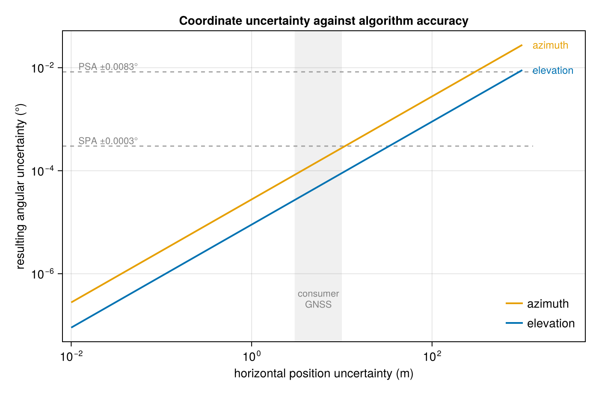

Uncertainty Propagation
The Observer{T} element type is only constrained to Real, so measurement values flow through every algorithm and solar positions work with Measurements.jl. No extension package is needed. See the Automatic Differentiation guide for the other thing that genericity buys, and the Numeric Precision guide for the supported number types themselves.
Give the coordinates an uncertainty and it reaches every returned angle:
using SolarPosition
using Dates
using Measurements
obs = Observer(52.35888 ± 0.01, 4.88185 ± 0.01) # Van Gogh Museum, Amsterdam
pos = solar_position(obs, DateTime(2023, 6, 21, 12))SolPos(azimuth=188.399 ± 0.019°, elevation=60.8792 ± 0.0099°, zenith=29.1208 ± 0.0099°)Correlations
Results that share an input stay consistent, because Measurements tracks the derivative chain rather than combining variances blindly. Zenith is derived from elevation, so their sum carries no uncertainty at all:
pos.elevation + pos.zenith\[90.0 \pm 0.0\]
Treating the two as independent would instead report about ± 0.014. This holds through the Observer's precomputed latitude trig, which is the part most likely to lose the correlation.
Everything else the package offers behaves the same way. Measurement{Float32} stays Float32, and the vectorized, in-place, and table interfaces all carry uncertainties through unchanged:
times = collect(DateTime(2023, 6, 21, 10):Hour(2):DateTime(2023, 6, 21, 14))
solar_position(obs, times).elevation3-element Vector{Measurements.Measurement{Float64}}:
55.1321 ± 0.0084
60.8792 ± 0.0099
50.9926 ± 0.0076How much does a coordinate error matter?
A GPS fix carries its own uncertainty, so a natural question is how much of it reaches the computed angles. Converting a horizontal position uncertainty in metres into degrees of latitude and longitude answers it directly, and sweeping that uncertainty shows the whole picture at once.
m_per_deg_lat = 111_320.0
m_per_deg_lon = 111_320.0 * cosd(52.35888)
sigma_m = 10 .^ range(-2, 3; length = 60)
angles = [
solar_position(
Observer(52.35888 ± (s / m_per_deg_lat), 4.88185 ± (s / m_per_deg_lon)),
DateTime(2024, 6, 21, 12), SPA(), NoRefraction(),
) for s in sigma_m
]
sigma_elev = [Measurements.uncertainty(p.elevation) for p in angles]
sigma_azim = [Measurements.uncertainty(p.azimuth) for p in angles]Plotted against the accuracy the algorithms themselves claim:
using CairoMakie
blue, orange = "#0072B2", "#E69F00"
fig = Figure(size = (700, 460))
ax = Axis(
fig[1, 1];
xscale = log10, yscale = log10,
xlabel = "horizontal position uncertainty (m)",
ylabel = "resulting angular uncertainty (°)",
title = "Coordinate uncertainty against algorithm accuracy",
xgridcolor = (:gray, 0.2), ygridcolor = (:gray, 0.2),
)
# a typical consumer GNSS fix, roughly 3 to 10 m
vspan!(ax, 3, 10; color = (:gray, 0.12))
text!(ax, 5.5, 2.0e-7; text = "consumer\nGNSS", align = (:center, :bottom),
color = :gray, fontsize = 11)
hlines!(ax, [0.0003]; xmax = 0.9, color = (:gray, 0.7), linestyle = :dash)
hlines!(ax, [0.0083]; xmax = 0.9, color = (:gray, 0.7), linestyle = :dash)
text!(ax, 0.012, 0.0003; text = "SPA ±0.0003°", align = (:left, :bottom),
color = :gray, fontsize = 11)
text!(ax, 0.012, 0.0083; text = "PSA ±0.0083°", align = (:left, :bottom),
color = :gray, fontsize = 11)
lines!(ax, sigma_m, sigma_azim; color = orange, linewidth = 2, label = "azimuth")
lines!(ax, sigma_m, sigma_elev; color = blue, linewidth = 2, label = "elevation")
text!(ax, 1300, sigma_azim[end]; text = "azimuth", color = orange,
align = (:left, :center), fontsize = 12)
text!(ax, 1300, sigma_elev[end]; text = "elevation", color = blue,
align = (:left, :center), fontsize = 12)
xlims!(ax, 0.008, 5000)
axislegend(ax; position = :rb, framevisible = false)
fig
Propagation is linear to first order, so both curves are straight on log axes: about 9.0e-6° of elevation and 2.8e-5° of azimuth per metre of position error. A consumer fix good to 5 m therefore costs 4.5e-5° in elevation and 1.4e-4° in azimuth.
Azimuth is the more sensitive of the two, and it reaches SPA's stated ±0.0003° at about 11 m of position error, where elevation needs 33 m. Against PSA's ±0.0083° the margins are 300 m and 920 m.
So for a PSA-class algorithm the coordinates are never the limiting factor. For SPA at the weaker end of a consumer fix the two are comparable, which is worth knowing before blaming a disagreement on the algorithm.
Refraction parameters
Pressure and temperature are measured quantities too, and refraction models accept them with uncertainties in the same way. Pairing an exact observer with an uncertain atmosphere isolates what the weather alone contributes:
exact = Observer(52.35888, 4.88185)
low = DateTime(2023, 12, 21, 8) # a low winter sun, where refraction is largest
solar_position(exact, low, PSA(), HUGHES(101325.0 ± 500.0, 12.0 ± 2.0))ApparentSolPos(azimuth=131.60591634226506 ± 0.0°, elevation=0.560174802251171 ± 0.0°, zenith=89.43982519774883 ± 0.0°,
apparent_elevation=0.967 ± 0.0035°, apparent_zenith=89.033 ± 0.0035°The geometric angles come back exact, since they do not depend on the atmosphere, while the apparent ones carry the pressure and temperature uncertainty. Making the observer uncertain as well widens both, and the two contributions combine in the apparent angles.
Sunrise and sunset
Event times are a special case, because a DateTime cannot carry an uncertainty. transit_sunrise_sunset rounds to a whole second, so it returns the nominal times however uncertain the observer is:
transit_sunrise_sunset(Observer(52.35888 ± 5.0, 4.88185 ± 5.0), Date(2023, 6, 21)).sunrise2023-06-21T03:18:05transit_sunrise_sunset_seconds keeps the observer's element type instead, giving seconds since midnight UTC:
transit_sunrise_sunset_seconds(obs, Date(2023, 6, 21))TransitSunriseSunset{Measurements.Measurement{Float64}}(42134.7 ± 2.4, 11885.5 ± 4.3, 72384.2 ± 4.3)Rounding to a whole second also costs the sub-second part, so this variant is the more precise one even with ordinary numbers, and it is the one to use with ForwardDiff. The next_/previous_ helpers return a DateTime and drop the uncertainty in the same way transit_sunrise_sunset does.